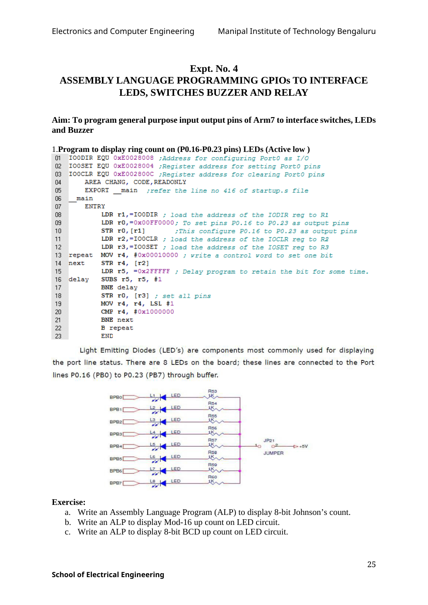

Copyable text transcription
OCR-generated from the original manual page. Check register names, labels, constants and punctuation against the reference image before using.
Electronics and Computer Engineering Manipal Institute of Technology Bengaluru
Expt. No. 4
ASSEMBLY LANGUAGE PROGRAMMING GPIOs TO INTERFACE
LEDS, SWITCHES BUZZER AND RELAY
Aim: To program general purpose input output pins of Arm7 to interface switches, LEDs
and Buzzer
1.Program to display ring count on (P0.16-P0.23 pins) LEDs (Active low )
01 IOODIR EQU OxE0028008 ;Address for configuring PortO as I/O
02 IOOSET EQU OxE0028004 ;Register address for setting Port0O pins
03 IOOCLR EQU OxE002800C ;Register address for clearing PortO pins
04 AREA CHANG, CODE, READONLY
05 EXPORT _ main ;refer the line no 416 of startup.s file
06 _ main
07 ENTRY
08 LDR r1,=IOODIR ; load the address of the IODIR reg to R1
os LDR r0,=Ox00FFO000; To set pins P0.16 to P0.23 as output pins
10 STR rO, [ri] sThis configure P0.16 to P0.23 as output pins
11 LDR r2,=IOOCLR ; load the address of the IOCLR reg to R2
12 LDR r3,=IOOSET ; load the address of the IOSET reg to R3
13 repeat MOV r4, #0x00010000 ; write 4 control word to set one bit
14 next STR r4, [r2]
15 LDR r5, =Ox2FFFFF ; Delay program to retain the bit for some time.
16 delay SUBS r5, r5, #1
17 BNE delay
18 STR rO, [r3] ; set all pins
19 MOV r4, r4, LSL #1
20 CMP r4, #0x1000000
21 BNE next
22 B repeat
23 END
Light Emitting Diodes (LED’s) are components most commonly used for displaying
the port line status. There are 8 LEDs on the board; these lines are connected to the Port
lines PO.16 (PBO) to PO.23 (PB7) through buffer.
Rs3
BPBO: a, aig
BPB!
Ly LED ik
BPB2 . wa pets
BPB3 =
oe Rs7 JP2t
BPB4 a > _ 241 - -5v
Rss JUMPER
Bpes le LED
s ©
BPBS or, ae
BPB7 te LED
Exercise:
a. Write an Assembly Language Program (ALP) to display 8-bit Johnson’s count.
b. Write an ALP to display Mod-16 up count on LED circuit.
c. Write an ALP to display 8-bit BCD up count on LED circuit.
25
School of Electrical EngineeringView original manual page (reference)
